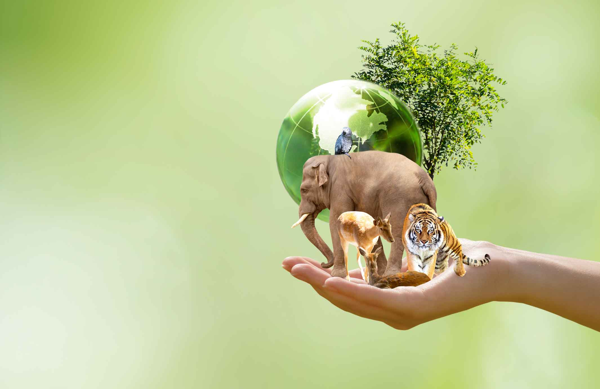

О проекте
Мы — жители Вологодской области, и мы, как и вы, любим свой край. Но сегодня мы не можем закрывать глаза на то, что происходит с нашей природой. Экологическая обстановка становится всё тревожнее: с каждым годом исчезают новые виды растений и животных, и этот процесс пугает своей скоростью.
Наша команда — это небольшая группа неравнодушных. Нас немного, но мы твёрдо решили: молчать больше нельзя. Мы хотим привлечь внимание к экологическим проблемам региона и говорим об этом открыто. И особенно важно для нас — донести это до тех, кому сейчас до 23 лет. Потому что именно вам, молодым, предстоит жить в Вологодской области в будущем. Именно вы можете изменить отношение к природе уже сегодня — своим примером, своим выбором, своим неравнодушием. Мы не решаем всё за вас. Мы просто начинаем разговор. Присоединяйтесь.


Зачем этот сайт
Чтобы люди узнавали, говорили и не отворачивались от проблемы. Мы верим, что даже маленький шаг в сторону осознанности — уже помощь.
Как помочь
- Если у вас есть возможность — поддержите тех, кто уже защищает природу региона.
- Если вы школьник или студент — покажите своё творчество: рисунки, стихи, фото. Лучшие работы мы опубликуем на сайте.

Мы не ждём, что кто-то сделает всё за нас. Мы просто делаем то, что можем. Присоединяйтесь.